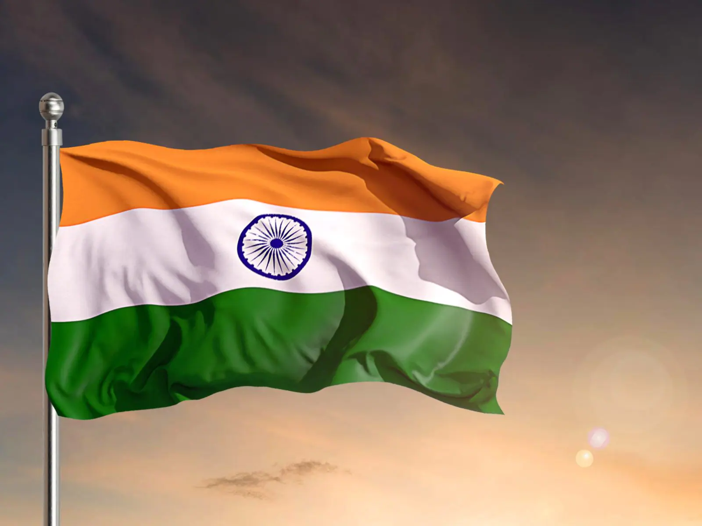

|  |
The National flag of India hasthreeequal horizontal bands - the top panel is India saffron (Kesari), the
bottom panel is India green and white middle band bearing at its centre the design of Ashoka Chakra in
navy blue colour with 24 equally spaced spokes. It was adopted by the Constituent Assembly on 22nd July
1947, when it became the official flag of the Dominion of India. The flag was subsequently retained as
that of the Republic of India. The flag is based on the Swaraj flag, a flag of the Indian National
Congress designed by PingaliVenkayya. |